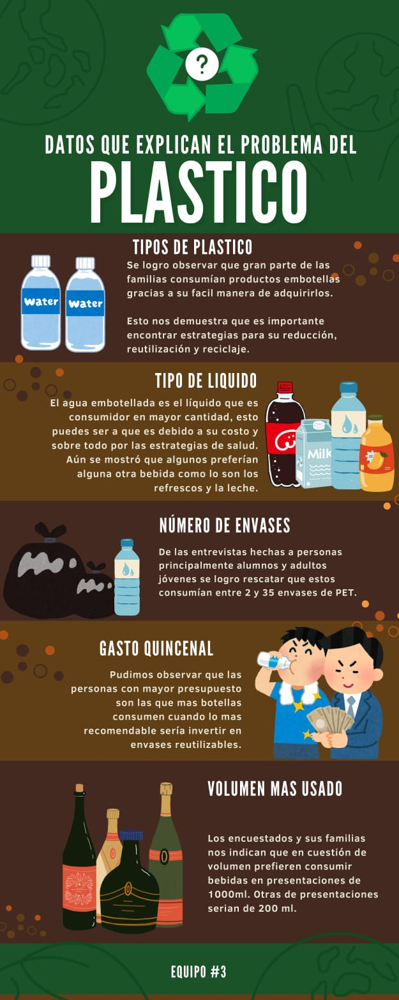
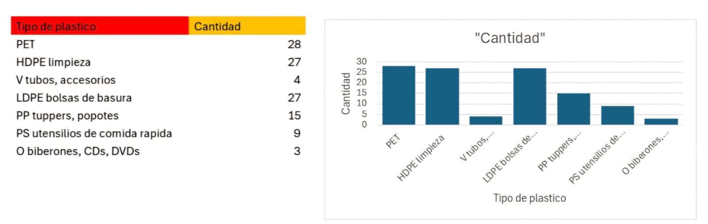

La tecnología al servicio del planeta
Sube aquí tu imagen JPG (infografia.jpg)
Sube aquí tu gráfica JPG (grafica.jpg)

Urbano Rios Andrea Sofia
Olvera Nieto Zyanya Camila
Martinez Olivares Alejandra
Segura Becerril Nurby
Santos Garcia Mauricio
Se producen más de 400 millones de toneladas de plástico cada año.
El 50% del plástico se usa una sola vez y se desecha inmediatamente.
Solo el 9% del plástico mundial se recicla realmente.
Más de 8 millones de toneladas llegan al océano cada año.
Para 2050, habrá más plástico que peces en el mar si no actuamos.
El PET es el plástico más usado del planeta para envases y botellas.
Puede reciclarse infinitas veces si se separa correctamente.
Se convierte en ropa, mochilas, escobas, muebles y mucho más.
Representa el 70% de todas las botellas plásticas.
Las botellas PET se fragmentan en microplásticos que dañan la vida marina.
Se han encontrado microplásticos en sangre humana, lluvia y nieve.
Los microplásticos entran en peces que después consumimos.
Producción → Uso → Recolección → Reciclaje → Nuevos productos.
Reduce CO₂, energía usada y contaminación ambiental.
Reciclar ahorra miles de litros de agua y energía.
Una botella PET tarda 450 a 600 años en degradarse.
Reciclar una botella puede encender una lámpara 6 horas.
1 tonelada reciclada evita 1.5 toneladas de CO₂.
Quita líquidos y restos.
Evita malos olores y contaminación.
Facilita que la máquina identifique el material.
Reduce volumen y transporte.
La tapa es otro plástico reciclable (PP).
Úsalo para centros de acopio o escuelas.
Se juntan botellas PET limpias y separadas.
Se separan por color y pureza.
Las botellas se convierten en pequeños trozos.
Se limpian químicamente.
El plástico se derrite y se filtra.
Se forman bolitas nuevas para fabricar productos.
Máquinas convierten PET en energía limpia.
Impresoras 3D usan PET reciclado como material.
Fibras recicladas que se degradan sin contaminar.
Algunos países usan PET para pavimentar.
IA que separa plásticos de forma automática.